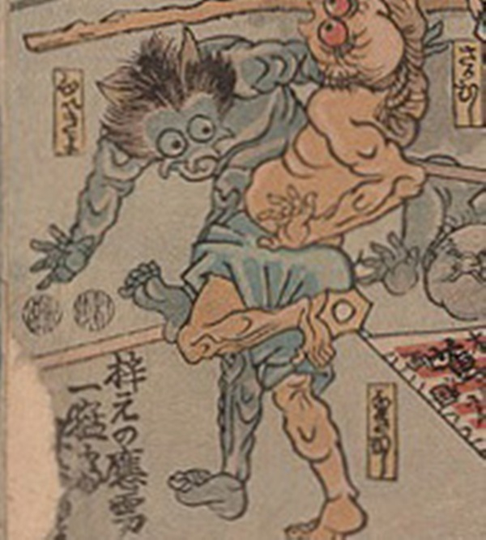

病気；ビョウキ，疫神；エキシン，脾陰虚；ヒインキョ

脾陰虚が擬人化した化物。肌は青く上あごが三又に分かれている。頭髪は逆立ち、間から2本の角のようなものが覗いている。
著作者：歌川芳虎／出典：親書誌：U426_nichibunken_0012：諸病諸薬の戦い；ショビョウショヤクノタタカイ／日付：2006／資源識別子：U426_nichibunken_0012_0007_0000
Copyright (c)2010- International Research Center for Japanese Studies, Kyoto, Japan. All rights reserved.